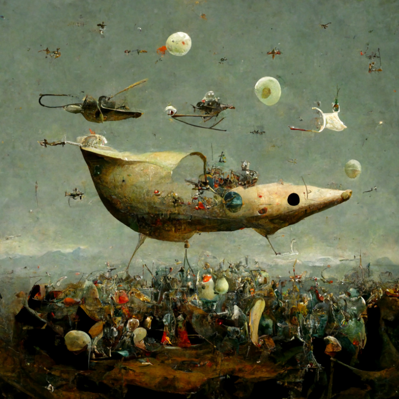
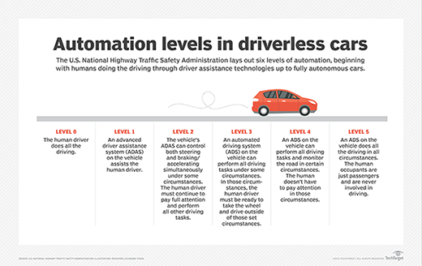

AI art generators use machine learning algorithms and deep neural networks to generate art. Large sets of already-made art are used to teach these algorithms how to find patterns and styles that can be used to make new art.
AI art generators can use different algorithms and methods depending on what the artist wants to make and how they want it to look. Some popular AI art generators include DeepDream, StyleGAN, and CycleGAN.
AI writing tools, also known as AI content writers, are pieces of software that generate text based on user input powered by artificial intelligence. AI writers can generate human-like text content with the power of AI technology. AI writing tools are excellent for businesses that conduct content marketing.
AI assistants generate output based on the user-given input. Over time, AI writing assistants are trained with varying forms of real-life data. As they learn from the given data, they improve at producing natural-sounding output. Since AI tools receive data from human beings, the generated output also turns out to be human-like.Similar to how human writers carry out research on existing content to write a new piece of content, AI content tools scan existing content on the web and gather data based on the instructions given by users. They then process data and bring out fresh content as output.
Autonomous vehicles operate by using remote-sensing technology including radar, GPS, cameras, and lidar to monitor and create a 3-D map of their environment. This environment typically includes street infrastructure, other vehicles, pedestrians, traffic lights, and road signs.
Autonomous vehicle, also called self-driving car or automated vehicle, automobile that employs driver assistance technologies to remove the need for a human operator. There are six stages of automation in automobiles, ranging from fully unassisted manual driving at stage 0 to fully automated self-driving cars at stage 5.
Though the terms self-driving or automated are commonly used interchangeably with autonomous, cars currently on the market are not capable of acting fully autonomously and cannot be operated without the intervention of a human driver. The industry standard is to use the term automated.
